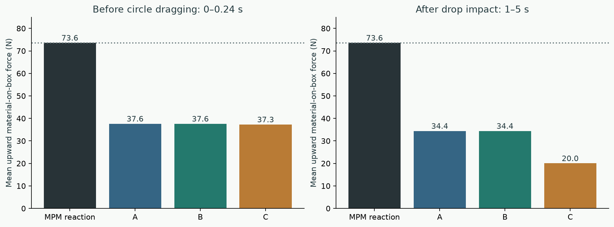
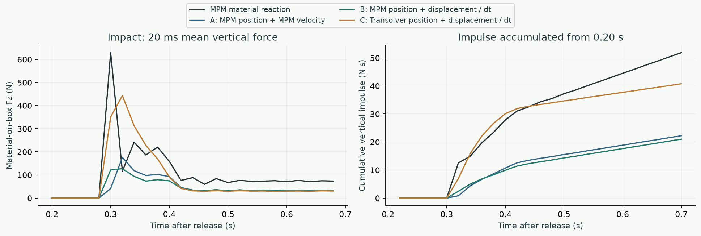
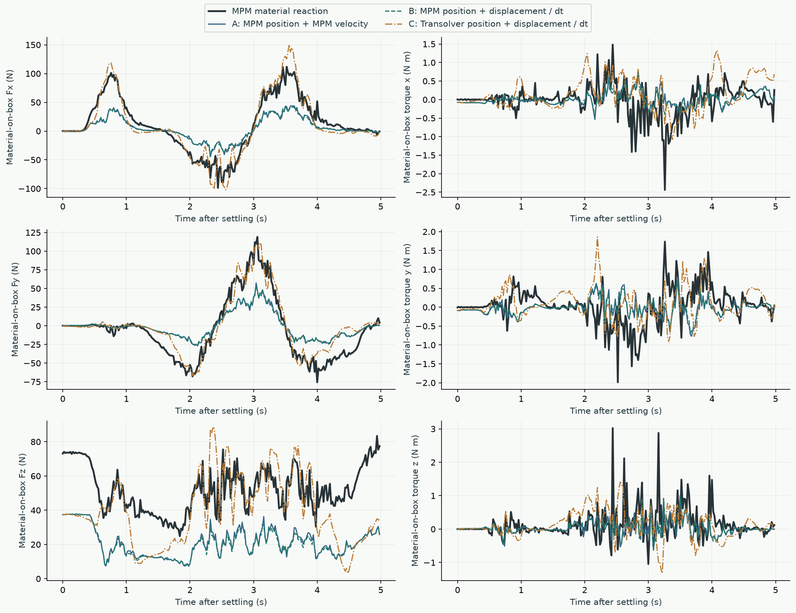
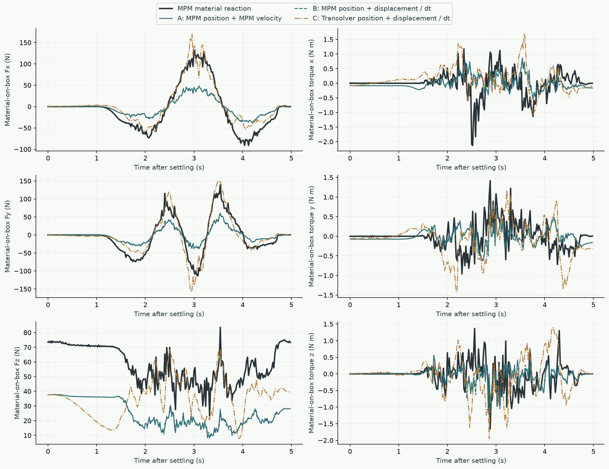
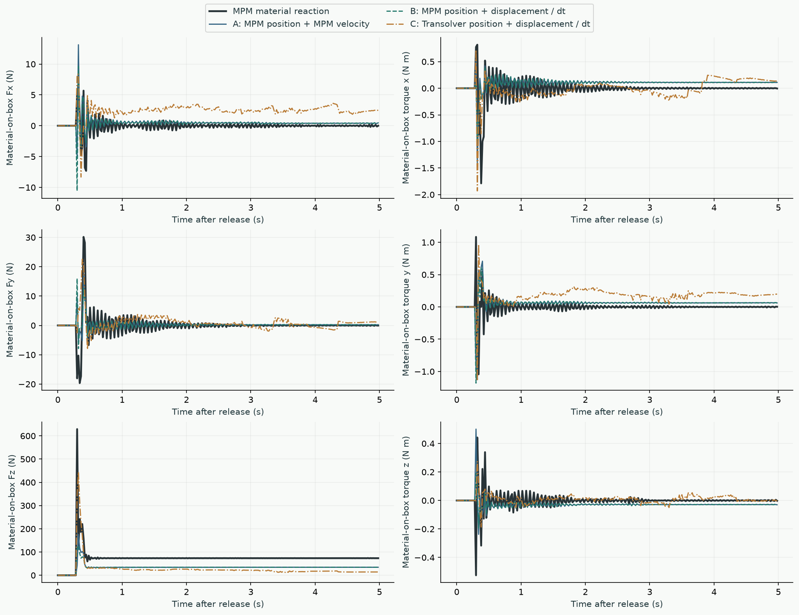

CONTROLLED FORCE RECONSTRUCTION / THREE PARTICLE INPUTS
The estimator loses support even with MPM particle inputs
01 / Controlled comparison
| Variant | Particle positions supplied | Particle velocity supplied |
|---|---|---|
| A | MPM x(t) | MPM v(t + dt) |
| B | MPM x(t) | [MPM x(t + dt) − MPM x(t)] / dt |
| C | Recurrent Transolver x(t) | [Transolver x(t + dt) − Transolver x(t)] / dt |
All three cases use the identical recorded box pose, linear/angular velocity, known external wrench at t, and estimator settings. No estimated forces are fed back to the box in this test. Case C uses the saved recurrent particle rollout conditioned on that same recorded box motion; it is not the particle trajectory from the previous closed-loop simulation. No retraining or estimator tuning was performed.
A → B isolates the velocity representation while keeping particle geometry fixed. B → C changes both particle geometry and velocity. A tests the existing estimator with reference inputs; it does not make the estimator an exact inverse-dynamics solver.
02 / Stationary support

The dashed line is the 7.5 kg box weight, 73.6 N. During the pre-drag interval there is no external drag force; after the drop there is no external force. Both reveal substantial missing support with reference particle inputs. The figure-eight pre-drag result is similar: A = 37.7 N versus a 73.6 N MPM reaction.
03 / Five-second force and torque errors
| Trajectory | A: MPM endpoint velocity | B: MPM displacement / dt | C: Transolver displacement / dt |
|---|---|---|---|
| wide-circle | 49.9 N 0.829 N m | 50.3 N 0.777 N m | 31.8 N 0.962 N m |
| figure-eight | 55.8 N 0.702 N m | 55.9 N 0.673 N m | 39.6 N 0.950 N m |
| vertical-drop | 54.7 N 0.322 N m | 52.0 N 0.313 N m | 57.8 N 0.353 N m |
Each cell reports force-vector RMSE (N) and torque-vector RMSE (N m). Force-vector RMSE = sqrt(mean(||F_est − F_ref||²)). Torques are world-frame moments about the box center of mass at the start of the 20 ms interval. Full curves below expose errors that a single number hides.
C has lower force RMSE than A/B during the two dragging trajectories, but larger torque RMSE. This does not establish a more physically accurate reconstruction: changing predicted particle geometry and motion also changes the estimator’s bias. The support deficit exists before the learned particle errors accumulate.
04 / Vertical drop: contact onset and impulse

| Input / reference | Peak 20 ms mean Fz | Vertical impulse, 0.20–0.70 s |
|---|---|---|
| MPM reaction | 629.1 N | 51.87 N s |
| A | 176.1 N | 22.23 N s |
| B | 127.3 N | 21.02 N s |
| C | 443.6 N | 40.79 N s |
All variants first exceed 1 N upward force in the 0.30–0.32 s interval, matching the reference at this 20 ms resolution. There is no estimated force before contact. The correct onset does not imply a correct impact impulse. A and B both substantially underestimate impulse; C is closer during impact but underestimates later support more severely. The A → B difference matters during impact, although it does not explain the static support failure.
05 / Measurement definitions and checks
Three trajectories × three input variants × 250 intervals = 2,250 independent contact solves. Every solve converged to the configured tolerance. Convergence means the approximate contact equations were solved, not that those equations reproduce MPM.
| Setting | Value |
|---|---|
| Estimator interval | 20 ms |
| MPM reference interval | 5 ms; four reactions averaged per estimator interval |
| Estimator settings | Effective particle mass scale 10; stabilization 0.01; velocity-gradient radius 0.065 m; friction 0.6; maximum 2,000 iterations; residual tolerance 1e−9 |
| Scene | Same 16,384-particle sand scene; 1 × 1 × 0.5 m initial volume; 0.04 m MPM grid; 7.5 kg box; no enclosing walls |
| Reference wrench | Raw material reaction from the four MPM steps, excluding gravity and external dragging. Substep torque origins shifted to the interval-start box COM before averaging. |
The previous closed-loop report used the feedback wrench actually applied to MJWarp. The coupler’s feedback timing differs from the current raw MPM reaction. This report retains both reference curves in the downloads and includes force RMSE against applied feedback as a secondary check. The support deficit is present against either reference. External force is held at its interval-start value inside the estimator, as in the current integration.
Verified: identical box trajectories and initial particle positions in the saved prediction/reference files; correct frame alignment; finite estimates; unchanged estimator settings across all cases. The comparison is limited to these three trajectories and this material/box configuration.
Wide Circle: force and torque

Download measurements and curves
Figure Eight: force and torque

Download measurements and curves
Vertical Drop: force and torque

Download measurements and curves
06 / Next decision
First audit why the estimator cannot maintain static support with reference particle states. Check the effective-mass/material response, contact geometry, and timestep assumptions against the equilibrium case. Then repeat this ablation. Improving Transolver or fitting a residual network first would mix particle-prediction errors with a substantial baseline estimator bias.